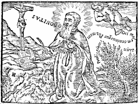

ARS INFUSA
Blessed Raymond Lull
1.Alphabet
2.Definitions 3.Rules
4.Figures 5.Table
6.Mixture 7.Application
8.Subjects 9.Questions
Contents of Ars Infusa Mindmap
of Ars Infusa
Back
to main contents

In the Name of the holy and undivided Trinity
and of its Divine Dignities, here begins a general Art or Science for obtaining
a sure knowledge of GOD and of all created things, infused by the grace
of the Holy Spirit. This Art, or Science, as its title says, comes from
GOD himself, and thus, sure knowledge of GOD, of the created universe and
of the creatures in it, is the subject matter of this Art.
This Art has Nine Parts.
1. The Alphabet, signifying
the Principles and Rules of this Art
2. The Definitions of
the Principles of this Art
3. The Rules or Questions,
and the species of the Rules.
4. The Figures First
Second Third
Fourth
5. The Table
6. The mixture
of Principles and Rules, clarifying the conclusions of this science.
7. The application
of implicit or external terms, to the explicit terms of this Art.
8. The Nine Subjects,
in which all things are contained.
9. The Questions
applied to the Subjects.
PART 1: THE ALPHABET
This, we say, is the alphabet: B., C., D., E.,
F., G., H., I., K.; which merely follows the sequential order of the letters,
and not necessarily any meanings of these letters or figures in themselves.
Thus, for the purpose of teaching this Art, we have arbitrarily chosen
B. as the first letter to stand for the first term of Figure One, and the
first term of Figure Two, and the first Question of this Art. Likewise,
C., as the second letter signifies or stands for the second principle of
Figure One, and the second principle of Figure Two, and the second question
or Rule of this Art. And so on with the others in sequential order, so
that the first letter, namely B.,
B. stands for Goodness, Difference, "Whether?"
or possibility.
C. stands for Greatness, Concordance, "What?"
or definition.
D. stands for Duration, Contrariety, "Of what?"
or materiality.
E. stands for Power, Beginning, "Why?" or
formality.
F. stands for Wisdom, Middle , "How much?",
or quantity.
G. stands for Will, End, "Of what quality?",
or quality.
H. stands for Virtue, Majority, "When?", or
time.
I. stands for Truth, Equality, "Where?", or
place.
K. stands for Glory, Minority, "How?", and
"With what?",or modality and instrumentality.
And the said letters merely stand for this, and
nothing else, in this present Art. And thus there are 18 Principles and
10 Rules that these letters are made to stand for, in which this entire
Science is contained, for in them the knowledge of GOD and of the universe
are naturally implied.
PART 2: THE DEFINITIONS OF
THE PRINCIPLES
The Definitions, as found in Ars Brevis, are
the following:
1. B. Goodness is that, whereby good does
good, & thus it is good to be, & evil not to be.
2. C. Greatness is that, through which
Goodness, Duration, etc.are great, as they enfold the utmost reaches of
all there is.
3. D. Duration is that through which Goodness,
Greatness, etc. are lasting.
4. E. Power is that through which Goodness,
Greatness,etc. can exist and act.
5.F. Wisdom is a property, by which the
wise understand .
6.G. Will is that, on account of which
Goodness, Greatness,etc. are desirable.
7.H. Virtue is the origin of the union
of Goodness, Greatness, & the other Principles.
8. I. Truth is that,which is true about
Goodness, Greatness, etc.
9. K. Glory is that delight, in which
Goodness, Greatness, etc. find rest.
1. Difference is that, whereby Goodness,
Greatness, & the other Principles are clear reasons without any confusion.
2. Concordance is that, through which
Goodness, etc. concord in unity & in plurality.
3. Contrariety is a mutual resistance
due to divergent ends.
4. Beginning is something that is before
all else on account of some priority.
5. The Middle is a subject, in which the
End influences the Beginning, & the Beginning flows back to the End,
as it is naturally common to both.
6. The End is that in which the beginning
rests.
7. Majority is the image of the boundlessness
of Goodness, Greatness, Eternity, and of the other Dignities of GOD.
8. Equality is the subject in which the
final Concordance of Goodness, Greatness, etc. rests.
9. Minority is a Being close to non-being.
We have stated the Definitions of the Principles,
which must be known by heart; for without knowing these Definitions, one
cannot learn this Art.
PART 3: THE RULES
1. The First Question: "Whether or not this
is so."
The first question asked is "Whether or not?",
and this is done in three parts: namely doubt, affirmation and negation.
Through these we seek out and find the truth for solving any question asking
whether something is so, or not. With the first species, by supposing that
both may be possible, so that from the start, the intellect does not bind
itself to belief, as believing is not its natural act. But rather, it must
accept that option, which leads to a greater and more direct understanding
of its own. For the true option must be the one, that has withstood the
inquiry and the infallible proof brought to bear on any matter through
this general rule or question, which is the following.
Between the affirmative and negative options
in answering any question, the true option to be upheld is the one which
does not destroy the principles and the rules of this art, but which is
in the greatest accordance with them; and this is determined by all three
of the potentials of the soul engaged in the inquiry, namely, through understanding,
through willing and through remembering why the chosen option preserves
the definitions of the principles and the species of the rules in a greater
perfection of goodness, greatness etc., in the affirmative than in the
negative, or vice versa.
2. The Second Question: "What is this?"
The second question asks: "What is this?", and
it has 4 species,
1. The first species seeks a definition,
and is answered by giving a definition of the thing inquired about. 2.
The second species seeks to know the constituents, or correlative parts
of a thing, and it is answered by giving the correlatives, or the constitution
of this thing.
3. The third species is passive, or informed, and
it is answered by naming the passive, or the informed aspects of the matter.
4.
The fourth species is active, or informing, and its answer is given by
stating the activity, form, or act of the thing inquired about.
3. The Third Question: "Of what?"
The third question is: "Of what?" as it asks:
"What is this thing of?" and it has three species. 1. The first
species is primary, and inquires into the primary origin of the thing,
and it is answered by stating the primary quality of the thing in question.
2.
The second species is derivative, and it is answered by stating the correlative
parts of the thing, namely the parts it is derived from, if it has any.
3.
The third species is possessive, as it asks about ownership, or about what,
or whom the thing belongs to, and it is answered by indicating who or what
it is owned by.
4. The Fourth Question: "Why?"
The fourth question is "Why?", and has two species.
1.
The first species is formal, and it is answered by stating the form as
well as the matter of the thing in question. 2. The second species
is final, and is answered by stating the final purpose of this thing.
5.The Fifth Question: "How much?"
The fifth question asks: "How much?", and has
two species, 1. The first species is continuous, and is answered
by giving the continuous quantity of the thing in question. 2. The
second species is discrete, and it is answered by stating the discrete
quantity of this thing.
6. The Sixth Question: "What quality?"
The sixth question asks about the quality of
a thing, and it has two species: 1. The first is proper, and is
answered by stating the proper quality of the thing in question. 2.
The second is appropriated, and is answered by stating the appropriated
qualities of this thing.
7. The Seventh Question: "When?"
The seventh question asks "When?" , and has 15
species, 4 of which are drawn from the rule:"What?", and 3
from the rule "Of what?", and 4 from the rule "How?", and 4
from the rule "With what?", by reducing all these to the question "When?"
, and the answers to these are given through a sequential reduction to
the said solutions.
8. The Eighth Question: "Where?"
The eighth question asks: "Where?", and has the
same 15 species reduced to "Where?", which are likewise answered
through a reduction to "Where?".
9. The Ninth Question: "How?"
The ninth question asks "How?", and it has 4
species, namely:
1. "How does this part exist as a part?" And the
answer to this is: "through difference". 2. "How does this part
fit into other parts?" And the answer is: "through concordance". 3.
"How do the parts exist in the whole, and the whole in its parts?" And
the answer is : "through difference and concordance". 4. "How does
the whole transmit its likeness outside of itself?" And the answer is:
"through the way that it has with its own correlatives, with which it draws
extraneous species from outside of itself, and which it characterizes and
informs with its active correlative in its passive correlative, thus transmitting
its own likeness outside of itself."
10. The Tenth Question: "With what?"
The tenth rule or question asks "With what?"
And it has 4 species like the one just preceding, and the answer
is likewise given through a reduction of these to "With what?".
Back to top
Figure 1
Contents
|